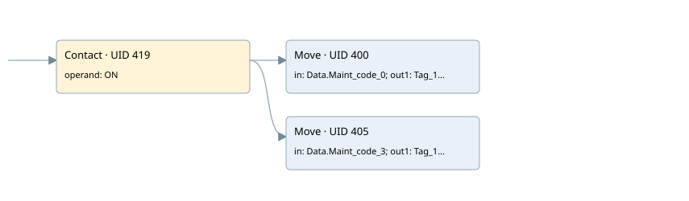

trasfering bit of maintenance
main · 검색 색인 순서 13 · 원본 내부 NID 추정 11
백업 PLF 원본의 3197544 바이트 위치에서 복원한 XML. 검색 문서 1624의 객체 키 16102200ad6b000000000000와 연결했다. 이름 해석 5/5개. 남은 RefId는 상수 또는 미해석 참조다.
연결 구조 다시 그리기
원본 Part/PCon/Wire를 이용한 연결도다. TIA 화면의 래더 배치 또는 실행 결과를 재현한 그림은 아니다. 핀 연결은 아래 표와 원본 XML을 기준으로 읽는다. 노드 위에 마우스를 두면 피연산자 이름을 볼 수 있다.

접점·코일·블록과 피연산자
| Part UID | Gate | Negated 핀 | 연결 피연산자 |
|---|---|---|---|
| 419 | Contact | operand = ON | |
| 400 | Move | in = Data.Maint_code_0; out1 = Tag_189 | |
| 405 | Move | in = Data.Maint_code_3; out1 = Tag_190 |
접점 경로를 펼친 조건식
Contact·O/A·비교기의 원본 연결을 읽기 쉽게 펼친 보조 해석이다. POWER는 전원 레일 시작을 뜻한다. 호출 블록·에지·타이머의 내부 동작과 다중 쓰기 순서는 이 표로 실행 검증하지 않았다. 미해석 핀과 RefId는 원문 연결표에서 확인한다.
| UID | 동작 | 대상 | 원본 접점 경로 | 내용 |
|---|---|---|---|---|
| 400 | Move | Tag_189 | ON | Move 입력 Data.Maint_code_0 |
| 405 | Move | Tag_190 | ON | Move 입력 Data.Maint_code_3 |
원본 배선 연결
| Wire UID | 동일 Wire 연결 끝점 |
|---|---|
| 421 | Powerrail {} ↔ Part 419.in |
| 413 | ORef 408 (ON) ↔ Part 419.operand |
| 420 | Part 419.out ↔ Part 400.en ↔ Part 405.en |
| 414 | ORef 409 (Data.Maint_code_0) ↔ Part 400.in |
| 415 | Part 400.out1 ↔ ORef 410 (Tag_189) |
| 416 | ORef 411 (Data.Maint_code_3) ↔ Part 405.in |
| 417 | Part 405.out1 ↔ ORef 412 (Tag_190) |
식별자 해석 근거 5개
| ORef UID | RefId | 이름 | IdentXmlPart 파일 | 해석 방법 |
|---|---|---|---|---|
| 408 | 52 | ON | 0692-IdentXmlPart.xml | UID/RID + search-text + NID agreement |
| 409 | 103 | Data.Maint_code_0 | 0690-IdentXmlPart.xml | UID/RID + search-text + NID agreement |
| 410 | 104 | Tag_189 | 0692-IdentXmlPart.xml | UID/RID + search-text + NID agreement |
| 411 | 106 | Data.Maint_code_3 | 0690-IdentXmlPart.xml | UID/RID + search-text + NID agreement |
| 412 | 107 | Tag_190 | 0692-IdentXmlPart.xml | UID/RID + search-text + NID agreement |
검색 코드 보조 자료
참조 명칭을 찾기 위한 자료이며 실행 순서나 AND/OR 관계는 위 연결표로 확인한다.
"on" move "data".maint_code_0 move "data".maint_code_3 "tag_190" "tag_189"